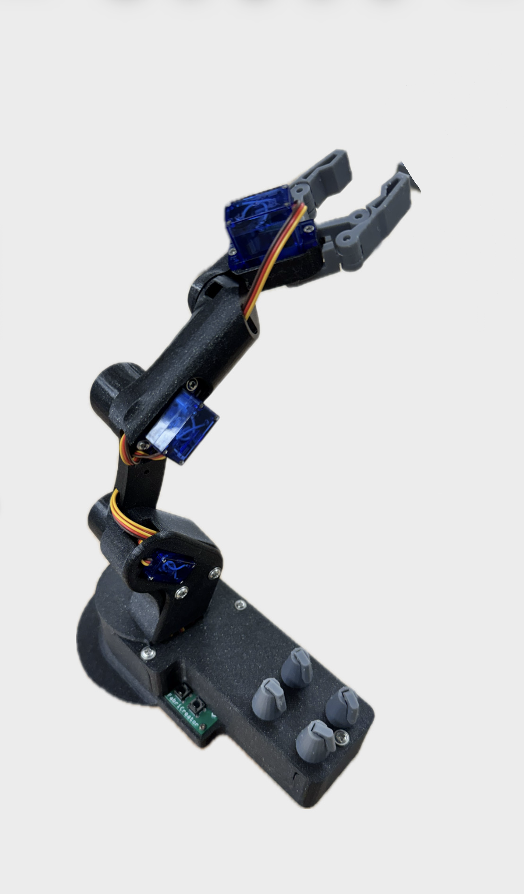

4-DOF robotic arm prototype with motion control and testing
Reverse-engineered, modeled, prototyped, and validated a 4-degree-of-freedom robotic arm as part of a course project. Designed the full mechanical system in Siemens NX and produced rapid prototypes using FDM 3D printing and laser cutting.
Developed control electronics using KiCad and implemented motion control through Arduino and PlatformIO. Integrated PID control to achieve smooth and stable joint movement across all axes.
This project strengthened my skills in mechanical design, electronics integration, prototyping, and system-level thinking, while demonstrating the full process from concept to functional validation.